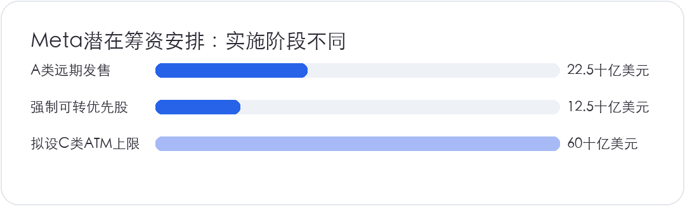
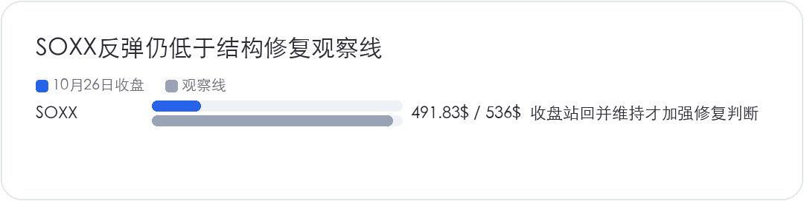
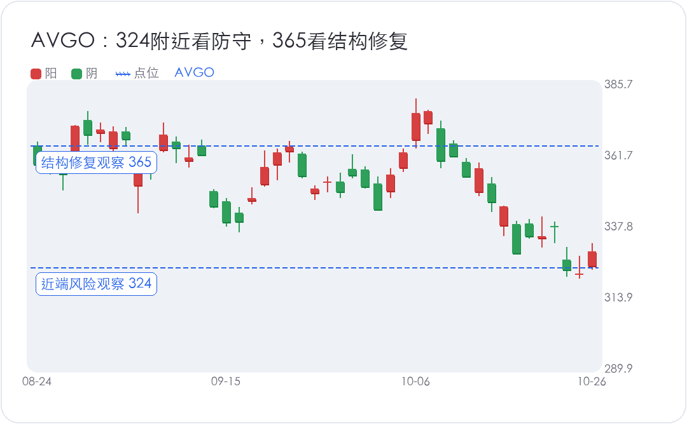

<div style="margin:0;padding:0;background:#f5f7fa;color:#2a2a34;font-size:16px;line-height:1.9;font-family:-apple-system,BlinkMacSystemFont,'SF Pro Text','PingFang SC','Hiragino Sans GB','Microsoft YaHei',Arial,sans-serif;font-variant-numeric:tabular-nums;font-feature-settings:'tnum' 1,'lnum' 1;text-align:left !important;text-align-last:left;letter-spacing:0;word-spacing:normal;white-space:normal;word-break:normal;box-sizing:border-box;"><div style="margin:0;background:#ffffff;padding:28px 22px 44px 22px;box-sizing:border-box;text-align:left !important;text-align-last:left;letter-spacing:0;word-spacing:normal;white-space:normal;word-break:normal;"><p style="display:block;width:100%;margin:0 0 12px 0;padding:0;color:#2763e9;font-size:10px;line-height:1.6;font-weight:650;letter-spacing:0.12em;text-align:center !important;text-align-last:center;word-spacing:normal;white-space:normal;word-break:normal;box-sizing:border-box;">美股 · 期权 · 资讯 · 观点</p><div style="margin:0 0 30px 0;padding:0;text-align:center !important;text-align-last:center;word-spacing:normal;white-space:normal;word-break:normal;box-sizing:border-box;"></div><div style="margin:0 0 0 0;padding:28px 0 0 0;text-align:left !important;text-align-last:left;letter-spacing:0;word-spacing:normal;white-space:normal;word-break:normal;box-sizing:border-box;"><div style="margin:0 0 12px 0;padding:0;text-align:left !important;line-height:1.2;border:0;display:flex;align-items:center;gap:10px;text-align-last:left;letter-spacing:0;word-spacing:normal;white-space:normal;word-break:normal;box-sizing:border-box;"><span style="display:inline-block;flex:0 0 auto;vertical-align:middle;color:#2763e9;font-size:12px;font-weight:850;letter-spacing:0.12em;line-height:1.2;text-transform:uppercase;border:0;box-sizing:border-box;">0 · SEMIS</span><span style="display:block;flex:1 1 auto;min-width:36px;vertical-align:middle;height:1px;margin:0 0 2px 0;background:#2763e9;line-height:1px;font-size:0;border:0;box-sizing:border-box;"></span></div><p style="margin:0 0 16px 0;padding:0;color:#2a2a34;font-size:22px;line-height:1.45;font-weight:850;text-align:left !important;letter-spacing:0;text-align-last:left;word-spacing:normal;white-space:normal;word-break:normal;box-sizing:border-box;">半导体先按反弹看</p><p style="margin:0 0 16px 0;padding:0;color:#454550;font-size:16px;line-height:1.9;font-weight:400;text-align:left !important;letter-spacing:0;word-spacing:normal;white-space:normal;word-break:normal;text-align-last:left;box-sizing:border-box;">半导体先按反弹处理，反转要等财报和价格确认。10月26日，<strong style="color:#2a2a34;font-weight:700;box-sizing:border-box;">SOXX</strong>收在491.83美元，上涨2.85%，但结构修复观察线仍在536美元；<strong style="color:#2a2a34;font-weight:700;box-sizing:border-box;">AVGO</strong>收在329.17美元，365美元上方才有更明确的修复信号。需求消息给了买盘理由，前面的破位还没有修复。</p><p style="margin:0 0 16px 0;padding:0;color:#454550;font-size:16px;line-height:1.9;font-weight:400;text-align:left !important;letter-spacing:0;word-spacing:normal;white-space:normal;word-break:normal;text-align-last:left;box-sizing:border-box;">标普涨0.7%，纳指涨0.8%，道指涨0.3%。QQQ涨1.11%至712.20美元，VIX由19.45回落至18.39。保护性需求有所下降，市场先喘了一口气。风险有没有退下去，还得往后看。Meta融资安排、Anthropic算力合同、SpaceX的GPU融资承诺，与半导体回升的方向一致。三件事各有约束，订单预期改善之后，还要等资金、交付和回款。</p></div><div style="margin:30px 0 0 0;padding:28px 0 0 0;text-align:left !important;text-align-last:left;letter-spacing:0;word-spacing:normal;white-space:normal;word-break:normal;box-sizing:border-box;"><div style="margin:0 0 12px 0;padding:0;text-align:left !important;line-height:1.2;border:0;display:flex;align-items:center;gap:10px;text-align-last:left;letter-spacing:0;word-spacing:normal;white-space:normal;word-break:normal;box-sizing:border-box;"><span style="display:inline-block;flex:0 0 auto;vertical-align:middle;color:#2763e9;font-size:12px;font-weight:850;letter-spacing:0.12em;line-height:1.2;text-transform:uppercase;border:0;box-sizing:border-box;">1 · MEGACAP</span><span style="display:block;flex:1 1 auto;min-width:36px;vertical-align:middle;height:1px;margin:0 0 2px 0;background:#2763e9;line-height:1px;font-size:0;border:0;box-sizing:border-box;"></span></div><p style="margin:0 0 16px 0;padding:0;color:#2a2a34;font-size:22px;line-height:1.45;font-weight:850;text-align:left !important;letter-spacing:0;text-align-last:left;word-spacing:normal;white-space:normal;word-break:normal;box-sizing:border-box;">Meta筹钱，股东要看清阶段</p><p style="margin:0 0 16px 0;padding:0;color:#454550;font-size:16px;line-height:1.9;font-weight:400;text-align:left !important;letter-spacing:0;word-spacing:normal;white-space:normal;word-break:normal;text-align-last:left;box-sizing:border-box;"><strong style="color:#2a2a34;font-weight:700;box-sizing:border-box;">META</strong>启动约350亿美元的发行安排，包括225亿美元A类普通股远期出售，以及125亿美元强制可转优先股存托股。另有最多600亿美元的C类股票ATM计划，预计最早在2027年第一季度、C类股开始交易后启用，目前尚未签分销协议。两部分合计950亿美元只是潜在规模，实际融资仍要分阶段落实。</p><p style="margin:0 0 16px 0;padding:0;color:#454550;font-size:16px;line-height:1.9;font-weight:400;text-align:left !important;letter-spacing:0;word-spacing:normal;white-space:normal;word-break:normal;text-align-last:left;box-sizing:border-box;">现金到账时间也不相同。A类远期出售初始不向Meta提供现金，要等未来结算；可转优先股的最终股息和转换条件仍待定价。对原有股东来说，普通股发行、未来转股和资金回报都影响每股价值，潜在融资额只能说明数量级；EPS怎么变，还得算发行价格、股数、转换条件和资金回报。</p><p style="margin:4px 0 16px 0;padding:0;text-align:center !important;text-align-last:center;word-spacing:normal;white-space:normal;word-break:normal;box-sizing:border-box;"></p><p style="margin:0 0 16px 0;padding:0;color:#454550;font-size:16px;line-height:1.9;font-weight:400;text-align:left !important;letter-spacing:0;word-spacing:normal;white-space:normal;word-break:normal;text-align-last:left;box-sizing:border-box;">Meta周一跌1.88%至630.56美元，半导体却明显反弹，两者可以同时发生：下游筹资有助于维持采购，上游的收入预期可能受益，旧股东同时承担融资成本。公司仍把经营现金流、投资级债务、战略合作和股权列为资金来源。股权是补充资金来源，债券仍在融资组合里。接下来跟踪最后发行多少、何时到账，以及新增投入能产生多少回报。</p></div><div style="margin:30px 0 0 0;padding:28px 0 0 0;text-align:left !important;text-align-last:left;letter-spacing:0;word-spacing:normal;white-space:normal;word-break:normal;box-sizing:border-box;"><div style="margin:0 0 12px 0;padding:0;text-align:left !important;line-height:1.2;border:0;display:flex;align-items:center;gap:10px;text-align-last:left;letter-spacing:0;word-spacing:normal;white-space:normal;word-break:normal;box-sizing:border-box;"><span style="display:inline-block;flex:0 0 auto;vertical-align:middle;color:#2763e9;font-size:12px;font-weight:850;letter-spacing:0.12em;line-height:1.2;text-transform:uppercase;border:0;box-sizing:border-box;">2 · FOCUS</span><span style="display:block;flex:1 1 auto;min-width:36px;vertical-align:middle;height:1px;margin:0 0 2px 0;background:#2763e9;line-height:1px;font-size:0;border:0;box-sizing:border-box;"></span></div><p style="margin:0 0 16px 0;padding:0;color:#2a2a34;font-size:22px;line-height:1.45;font-weight:850;text-align:left !important;letter-spacing:0;text-align-last:left;word-spacing:normal;white-space:normal;word-break:normal;box-sizing:border-box;">Anthropic的两个大合同，硬度不同</p><p style="margin:0 0 16px 0;padding:0;color:#454550;font-size:16px;line-height:1.9;font-weight:400;text-align:left !important;letter-spacing:0;word-spacing:normal;white-space:normal;word-break:normal;text-align-last:left;box-sizing:border-box;">Anthropic披露的SpaceX计算服务协议，到2029年的支出上限为1205亿美元。全部容量交付后，月费合计约31亿美元，公司预计2026年12月达到满容量。各协议的初始不可取消期分别在2027年1月、3月结束，此后双方可以提前90天书面通知取消。1205亿美元因此要按带退出权的上限看，实际收入取决于容量交付和协议延续。</p><p style="margin:0 0 16px 0;padding:0;color:#454550;font-size:16px;line-height:1.9;font-weight:400;text-align:left !important;letter-spacing:0;word-spacing:normal;white-space:normal;word-break:normal;text-align-last:left;box-sizing:border-box;"><strong style="color:#2a2a34;font-weight:700;box-sizing:border-box;">AVGO</strong>相关的多份五年设备融资租赁，租金合计约1612亿美元，不含利息，除违约外基本不可取消。部分TPU容量已在2026年上线，更多预计从2027年起上线。合同约束更强，收入可见性也相对更好。交付、付款能力和收入确认仍要逐项兑现。</p><p style="margin:0 0 16px 0;padding:0;color:#454550;font-size:16px;line-height:1.9;font-weight:400;text-align:left !important;letter-spacing:0;word-spacing:normal;white-space:normal;word-break:normal;text-align-last:left;box-sizing:border-box;">还有420亿美元可转票据融资额度，用来支持相关租金支付，提款受收入、流动性和履约条件约束，截至6月底并未借用。它给客户增加了付款工具，也让供应商承担更多客户信用敞口。观察博通时，既要看租赁承诺，也要看对手方能否按期付钱；名义合同总额不能直接计入当期收入或利润。</p><p style="margin:0 0 16px 0;padding:0;color:#454550;font-size:16px;line-height:1.9;font-weight:400;text-align:left !important;letter-spacing:0;word-spacing:normal;white-space:normal;word-break:normal;text-align-last:left;box-sizing:border-box;">把1205亿美元的服务协议上限与1612亿美元租赁总额相加，得到的是不同期限、不同取消条件的名义口径，不能据此计算同一年新增多少芯片收入。对供应商来说，合同约束力提高是好事；对客户来说，固定付款义务也提高了收入增长放缓时的压力。判断订单质量，要把这两面放在一起。</p></div><div style="margin:30px 0 0 0;padding:28px 0 0 0;text-align:left !important;text-align-last:left;letter-spacing:0;word-spacing:normal;white-space:normal;word-break:normal;box-sizing:border-box;"><div style="margin:0 0 12px 0;padding:0;text-align:left !important;line-height:1.2;border:0;display:flex;align-items:center;gap:10px;text-align-last:left;letter-spacing:0;word-spacing:normal;white-space:normal;word-break:normal;box-sizing:border-box;"><span style="display:inline-block;flex:0 0 auto;vertical-align:middle;color:#2763e9;font-size:12px;font-weight:850;letter-spacing:0.12em;line-height:1.2;text-transform:uppercase;border:0;box-sizing:border-box;">3 · FOCUS</span><span style="display:block;flex:1 1 auto;min-width:36px;vertical-align:middle;height:1px;margin:0 0 2px 0;background:#2763e9;line-height:1px;font-size:0;border:0;box-sizing:border-box;"></span></div><p style="margin:0 0 16px 0;padding:0;color:#2a2a34;font-size:22px;line-height:1.45;font-weight:850;text-align:left !important;letter-spacing:0;text-align-last:left;word-spacing:normal;white-space:normal;word-break:normal;box-sizing:border-box;">SpaceX锁定融资承诺，交割仍在后面</p><p style="margin:0 0 16px 0;padding:0;color:#454550;font-size:16px;line-height:1.9;font-weight:400;text-align:left !important;letter-spacing:0;word-spacing:normal;white-space:normal;word-break:normal;text-align-last:left;box-sizing:border-box;">SpaceX已取得约400亿美元GPU融资租赁的有约束力承诺，用于下一代英伟达设备。不过，租赁交易仍有交割条件，预计在2026年底前完成，设备预计于2027年上半年交付，利率也仍待定价。这条消息增强了未来采购的可见性，目前落下来的仍是融资承诺；现金交割和设备收入确认在后面。GPU交付之后还要接入可用机房、电力并完成部署。若设备到货和项目投产错位，利息、租金和收入的起算时间就可能不匹配；这也是融资规模很大，却仍需盯交付节奏的原因。</p><p style="margin:0 0 16px 0;padding:0;color:#454550;font-size:16px;line-height:1.9;font-weight:400;text-align:left !important;letter-spacing:0;word-spacing:normal;white-space:normal;word-break:normal;text-align-last:left;box-sizing:border-box;">三条消息共同缓解了对需求的担忧，却没有消除数据中心的融资分层。有成熟业务、经营现金流和多种资金来源的公司，承受建设延期的能力通常更强。依赖外部资金填缺口的运营商，则要反复核查可动用现金、已落实融资、利息和交付进度。不能因为某家大型企业拿到承诺，就推断整个行业都容易借到钱；也不能仅凭几项风险信号，断言所有独立云厂商的融资渠道已经关闭。</p></div><div style="margin:30px 0 0 0;padding:28px 0 0 0;text-align:left !important;text-align-last:left;letter-spacing:0;word-spacing:normal;white-space:normal;word-break:normal;box-sizing:border-box;"><div style="margin:0 0 12px 0;padding:0;text-align:left !important;line-height:1.2;border:0;display:flex;align-items:center;gap:10px;text-align-last:left;letter-spacing:0;word-spacing:normal;white-space:normal;word-break:normal;box-sizing:border-box;"><span style="display:inline-block;flex:0 0 auto;vertical-align:middle;color:#2763e9;font-size:12px;font-weight:850;letter-spacing:0.12em;line-height:1.2;text-transform:uppercase;border:0;box-sizing:border-box;">4 · CAPEX</span><span style="display:block;flex:1 1 auto;min-width:36px;vertical-align:middle;height:1px;margin:0 0 2px 0;background:#2763e9;line-height:1px;font-size:0;border:0;box-sizing:border-box;"></span></div><p style="margin:0 0 16px 0;padding:0;color:#2a2a34;font-size:22px;line-height:1.45;font-weight:850;text-align:left !important;letter-spacing:0;text-align-last:left;word-spacing:normal;white-space:normal;word-break:normal;box-sizing:border-box;">财报中的资本开支，要分四种情形</p><p style="margin:0 0 16px 0;padding:0;color:#454550;font-size:16px;line-height:1.9;font-weight:400;text-align:left !important;letter-spacing:0;word-spacing:normal;white-space:normal;word-break:normal;text-align-last:left;box-sizing:border-box;">本周的重点在10月28日盘后的<strong style="color:#2a2a34;font-weight:700;box-sizing:border-box;">MSFT</strong>、<strong style="color:#2a2a34;font-weight:700;box-sizing:border-box;">GOOG</strong>，以及10月29日盘后的<strong style="color:#2a2a34;font-weight:700;box-sizing:border-box;">AMZN</strong>。Meta已经在10月21日发布财报，这次需要跟踪的是后续融资安排。</p><p style="margin:0 0 16px 0;padding:0;color:#454550;font-size:16px;line-height:1.9;font-weight:400;text-align:left !important;letter-spacing:0;word-spacing:normal;white-space:normal;word-break:normal;text-align-last:left;box-sizing:border-box;">第一种情况，资本开支加速，同时越来越依赖高成本债务。供应商可能先拿到更多订单，云厂商却要承担利息、折旧和现金回收压力。看到投入上调，要接着看经营现金流是否跟上，不能只把支出增加当成全产业链利好。</p><p style="margin:0 0 16px 0;padding:0;color:#454550;font-size:16px;line-height:1.9;font-weight:400;text-align:left !important;letter-spacing:0;word-spacing:normal;white-space:normal;word-break:normal;text-align-last:left;box-sizing:border-box;">第二种情况，融资成本促使资本开支放慢。要区分主动控制回报和被迫填不上资金缺口：前者可能改善资产负债表，后者可能意味着项目延期、供应链订单下修。如果需求和融资一起走弱，对运营商和半导体都更难受；仅凭削减金额，还判断不了好坏。</p><p style="margin:0 0 16px 0;padding:0;color:#454550;font-size:16px;line-height:1.9;font-weight:400;text-align:left !important;letter-spacing:0;word-spacing:normal;white-space:normal;word-break:normal;text-align-last:left;box-sizing:border-box;">第三种情况，需求仍强，资本开支持平或增长，更多采用股权融资。现金到位后可以缓解债务压力，但原有股东要承担稀释和相应的资本成本。Meta的安排提供了一个例子，最终影响仍取决于发行条件和投入产出。</p><p style="margin:0 0 16px 0;padding:0;color:#454550;font-size:16px;line-height:1.9;font-weight:400;text-align:left !important;letter-spacing:0;word-spacing:normal;white-space:normal;word-break:normal;text-align-last:left;box-sizing:border-box;">第四种情况，资本开支增长的同时，经营现金流和可持续的自由现金流也加速改善。这才有机会让客户与供应商同时受益。收入、利润率和现金回收需要一起改善。管理层给出一两年后的平衡目标之后，还要逐季检查进度。</p><p style="margin:0 0 16px 0;padding:0;color:#454550;font-size:16px;line-height:1.9;font-weight:400;text-align:left !important;letter-spacing:0;word-spacing:normal;white-space:normal;word-break:normal;text-align-last:left;box-sizing:border-box;">微软和谷歌拥有其他成熟业务，可以提供资金缓冲，但这不意味着其股价可以免于估值压力。财报时把云业务增长、收入指引、现金资本开支、融资租赁和自由现金流放在同一期间比较，观察增长究竟需要投入多少资本，资金回收又要等多久。</p><p style="margin:0 0 16px 0;padding:0;color:#454550;font-size:16px;line-height:1.9;font-weight:400;text-align:left !important;letter-spacing:0;word-spacing:normal;white-space:normal;word-break:normal;text-align-last:left;box-sizing:border-box;">经营现金流若受到预收款、付款延后或营运资本释放的推动，改善未必可以长期重复。现金资本开支之外，还要核对融资租赁新增承诺和后续付款。投入加大通常先带来现金支出，折旧与回报再逐步反映到利润，单看某一季EPS或某一个自由现金流数字，都容易漏掉后面的负担。</p></div><div style="margin:30px 0 0 0;padding:28px 0 0 0;text-align:left !important;text-align-last:left;letter-spacing:0;word-spacing:normal;white-space:normal;word-break:normal;box-sizing:border-box;"><div style="margin:0 0 12px 0;padding:0;text-align:left !important;line-height:1.2;border:0;display:flex;align-items:center;gap:10px;text-align-last:left;letter-spacing:0;word-spacing:normal;white-space:normal;word-break:normal;box-sizing:border-box;"><span style="display:inline-block;flex:0 0 auto;vertical-align:middle;color:#2763e9;font-size:12px;font-weight:850;letter-spacing:0.12em;line-height:1.2;text-transform:uppercase;border:0;box-sizing:border-box;">5 · RISK</span><span style="display:block;flex:1 1 auto;min-width:36px;vertical-align:middle;height:1px;margin:0 0 2px 0;background:#2763e9;line-height:1px;font-size:0;border:0;box-sizing:border-box;"></span></div><p style="margin:0 0 16px 0;padding:0;color:#2a2a34;font-size:22px;line-height:1.45;font-weight:850;text-align:left !important;letter-spacing:0;text-align-last:left;word-spacing:normal;white-space:normal;word-break:normal;box-sizing:border-box;">止跌迹象之后，还要收回破位区</p><p style="margin:0 0 16px 0;padding:0;color:#454550;font-size:16px;line-height:1.9;font-weight:400;text-align:left !important;letter-spacing:0;word-spacing:normal;white-space:normal;word-break:normal;text-align-last:left;box-sizing:border-box;"><strong style="color:#2a2a34;font-weight:700;box-sizing:border-box;">SOXX</strong>和博通最近的三日组合出现了短线止跌迹象，反弹有了继续走的条件，现价却仍顶着此前破位后的压力。财报之前的买盘和空头回补，都可能让价格继续上行；一天的量价，还分不清这轮买盘能撑多久。</p><p style="margin:0 0 16px 0;padding:0;color:#454550;font-size:16px;line-height:1.9;font-weight:400;text-align:left !important;letter-spacing:0;word-spacing:normal;white-space:normal;word-break:normal;text-align-last:left;box-sizing:border-box;">SOXX需要重新站上536美元并维持，才有更强的结构修复依据。财报后若只是盘中触及、收盘又落回，或反弹没有成交量和板块广度支持，仍按震荡反弹处理。</p><p style="margin:4px 0 16px 0;padding:0;text-align:center !important;text-align-last:center;word-spacing:normal;white-space:normal;word-break:normal;box-sizing:border-box;"></p><p style="margin:0 0 16px 0;padding:0;color:#454550;font-size:16px;line-height:1.9;font-weight:400;text-align:left !important;letter-spacing:0;word-spacing:normal;white-space:normal;word-break:normal;text-align-last:left;box-sizing:border-box;"><strong style="color:#2a2a34;font-weight:700;box-sizing:border-box;">AVGO</strong>上周已失守过324美元，周一重新回到其上，收在329.17美元。324附近可作为这轮反弹的近端风险观察位；重新失守且反弹收不回，说明此前的破位压力仍在。更高一层看365美元，只有收回并保持，才加强趋势修复的判断。在这之前，涨到压力区仍可能引来减仓或新增空头。等待确认意味着更高的入场价，也减少把反弹误当反转的风险；这笔取舍要在下单前想清楚。</p><p style="margin:4px 0 16px 0;padding:0;text-align:center !important;text-align-last:center;word-spacing:normal;white-space:normal;word-break:normal;box-sizing:border-box;"></p></div><div style="margin:34px 0 0 0;padding:0;border:1px solid #e4e7ed;border-radius:24px;background:#fafbfc;text-align:center !important;box-sizing:border-box;overflow:hidden;text-align-last:center;word-spacing:normal;white-space:normal;word-break:normal;"><p style="margin:0;padding:18px 16px;color:#6a6a78;font-size:14px;line-height:1.8;text-align:center !important;background:#fafbfc;box-sizing:border-box;text-align-last:center;word-spacing:normal;white-space:normal;word-break:normal;">长按识别二维码关注公众号，持续获取每日美股资讯与观点。</p><p style="margin:0;text-align:center !important;background:#ffffff;box-sizing:border-box;text-align-last:center;word-spacing:normal;white-space:normal;word-break:normal;"></p></div><p style="margin:28px 0 0 0;padding:22px 0 0 0;color:#9a9aa8;font-size:12px;line-height:1.8;text-align:center !important;text-align-last:center;word-spacing:normal;white-space:normal;word-break:normal;box-sizing:border-box;">免责声明：本文仅为个人市场观察和交易复盘，不构成任何投资建议；市场有风险，交易需谨慎。点击阅读原文可跳转博客。</p></div></div>
